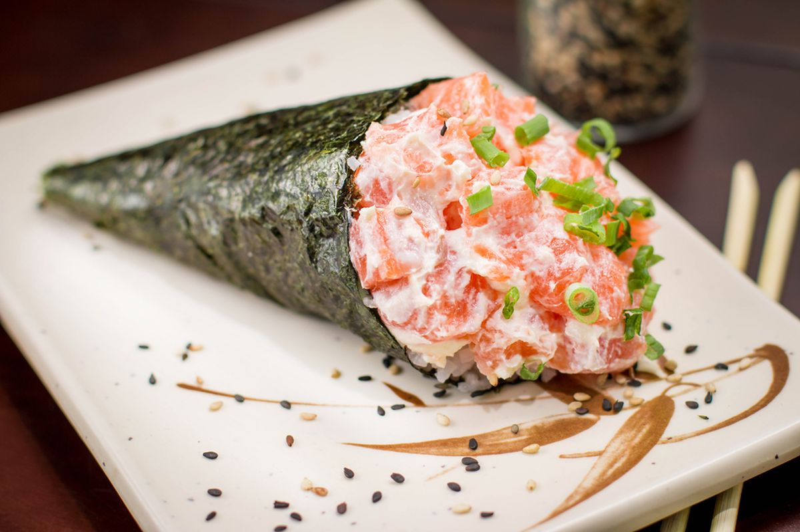

Receita 4 - Temaki
Minha opinião
Com quem eu provaria esse prato?
Como eu não conheço quase nada da culinária japonesa e muito menos usar hachi, seria legal se minha dubladora favorita me ensinasse
Receita
Ingredientes
- 3 e meia xícaras (chá) de água (700 ml)
- 3 xícaras (chá) de arroz tipo japonês (510 g)
- meia xícara (chá) de vinagre de arroz
- 2 e meia colheres (sopa) de saquê culinário (mirin)
- 4 colheres (sopa) de açúcar
- meia colher (chá) de sal
- 1 sachê de AJI-NO-MOTO (3 g)
- 400 g de salmão cortado em cubos pequenos
- meia embalagem de cream cheese (75 g)
- 3 colheres (sopa) de cebolinha cortada em rodelas
- 5 folhas de nori cortadas ao meio (alga-marinha)
Modo de preparo
Passo 1 - Em uma panela grande, coloque a água e leve ao fogo alto para aquecer. Ao abrir fervura, junte o arroz, mexa com cuidado e deixe cozinhar com a panela semitampada por 20 minutos, ou até a água começar a secar.
Passo 2 - Abaixe o fogo e cozinhe por mais 7 minutos. Retire do fogo, tampe, cubra a panela com um pano de prato limpo e deixe descansar por 10 minutos. Transfira o arroz para uma tigela e reserve.
Passo 3 - Em uma panela média, coloque o vinagre, o saquê, o açúcar, o sal e o AJI-NO-MOTO®, e leve ao fogo médio até levantar fervura. Retire do fogo, regue o arroz ainda quente, mexa cuidadosamente com uma espátula para que todo o arroz seja temperado e espere amornar.
Passo 4 - Em uma tigela, coloque o salmão, o cream cheese e a cebolinha, e misture.
Passo 5 - Sobre o lado fosco da folha de nori, com o auxílio de uma colher ou espátula, espalhe o arroz até formar uma camada de aproximadamente 0,5 cm. Disponha o salmão e enrole em formato de cone pressionando a parte inferior. Repita o processo com os ingredientes restantes e sirva logo em seguida.